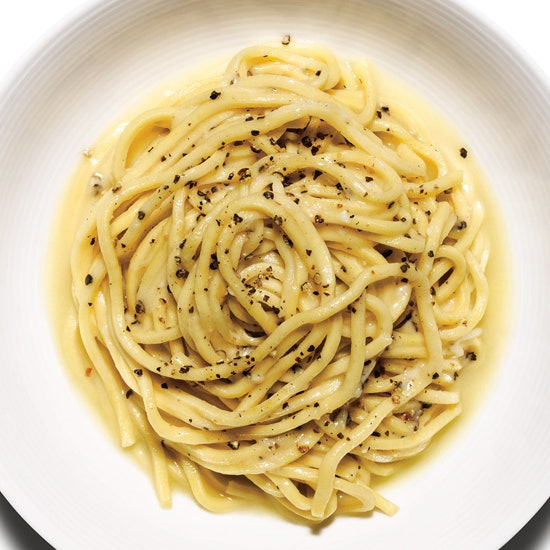

Cacio e Pepe

Description
A simple but delicious pasta dish.
Ingredients
- 6 oz. pasta
- 1 cup finely grated Pecorino or parmesan
- 1 tsp. freshly cracked black pepper
- 3 Tbsp. unsalted butter
- Kosher salt
Steps
- Bring 3 quarts water to a boil in a 5-qt. pot. Season with salt; add pasta and cook, stirring occasionally, until about 2 minutes before tender. Drain, reserving ¾ cup pasta cooking water.
- Meanwhile, melt 2 Tbsp. butter in a Dutch oven or other large pot or skillet over medium heat. Add pepper and cook, swirling pan, until toasted, about 1 minute.
- Add ½ cup reserved pasta water to skillet and bring to a simmer. Add pasta and remaining butter. Reduce heat to low and add Pecorino, stirring and tossing with tongs until melted. Remove pan from heat; add more Pecorino, stirring and tossing until cheese melts, sauce coats the pasta, and pasta is al dente. (Add more pasta water if sauce seems dry.) Transfer pasta to warm bowls and serve.
Return to main page